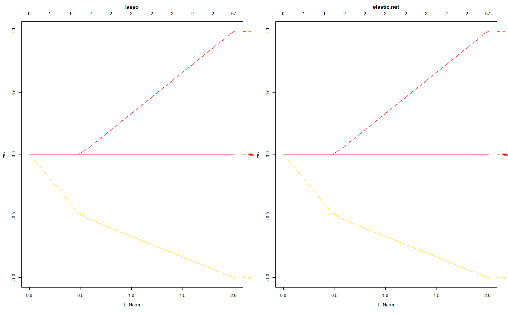

R/big_oem.R
Orthogonalizing EM for big.matrix objects
big.oem(x, y, family = c("gaussian", "binomial"), penalty = c("elastic.net", "lasso", "ols", "mcp", "scad", "mcp.net", "scad.net", "grp.lasso", "grp.lasso.net", "grp.mcp", "grp.scad", "grp.mcp.net", "grp.scad.net", "sparse.grp.lasso"), weights = numeric(0), lambda = numeric(0), nlambda = 100L, lambda.min.ratio = NULL, alpha = 1, gamma = 3, tau = 0.5, groups = numeric(0), penalty.factor = NULL, group.weights = NULL, standardize = TRUE, intercept = TRUE, maxit = 500L, tol = 1e-07, irls.maxit = 100L, irls.tol = 0.001, compute.loss = FALSE, gigs = 4, hessian.type = c("full", "upper.bound"))
| x | input big.matrix object pointing to design matrix Each row is an observation, each column corresponds to a covariate |
|---|---|
| y | numeric response vector of length nobs. |
| family |
|
| penalty | Specification of penalty type. Choices include:
Careful consideration is required for the group lasso, group MCP, and group SCAD penalties. Groups as specified by the |
| weights | observation weights. Not implemented yet. Defaults to 1 for each observation (setting weight vector to length 0 will default all weights to 1) |
| lambda | A user supplied lambda sequence. By default, the program computes
its own lambda sequence based on |
| nlambda | The number of lambda values - default is 100. |
| lambda.min.ratio | Smallest value for lambda, as a fraction of |
| alpha | mixing value for |
| gamma | tuning parameter for SCAD and MCP penalties. must be >= 1 |
| tau | mixing value for |
| groups | A vector of describing the grouping of the coefficients. See the example below. All unpenalized variables should be put in group 0 |
| penalty.factor | Separate penalty factors can be applied to each coefficient. This is a number that multiplies lambda to allow differential shrinkage. Can be 0 for some variables, which implies no shrinkage, and that variable is always included in the model. Default is 1 for all variables. |
| group.weights | penalty factors applied to each group for the group lasso. Similar to |
| standardize | Logical flag for x variable standardization, prior to fitting the models.
The coefficients are always returned on the original scale. Default is |
| intercept | Should intercept(s) be fitted ( |
| maxit | integer. Maximum number of OEM iterations |
| tol | convergence tolerance for OEM iterations |
| irls.maxit | integer. Maximum number of IRLS iterations |
| irls.tol | convergence tolerance for IRLS iterations. Only used if |
| compute.loss | should the loss be computed for each estimated tuning parameter? Defaults to |
| gigs | maximum number of gigs of memory available. Used to figure out how to break up calculations involving the design matrix x |
| hessian.type | only for logistic regression. if |
An object with S3 class "oem"
set.seed(123) nrows <- 50000 ncols <- 100 bkFile <- "bigmat.bk" descFile <- "bigmatk.desc" bigmat <- filebacked.big.matrix(nrow=nrows, ncol=ncols, type="double", backingfile=bkFile, backingpath=".", descriptorfile=descFile, dimnames=c(NULL,NULL)) # Each column value with be the column number multiplied by # samples from a standard normal distribution. set.seed(123) for (i in 1:ncols) bigmat[,i] = rnorm(nrows)*i y <- rnorm(nrows) + bigmat[,1] - bigmat[,2] fit <- big.oem(x = bigmat, y = y, penalty = c("lasso", "elastic.net", "ols", "mcp", "scad", "mcp.net", "scad.net", "grp.lasso", "grp.lasso.net", "grp.mcp", "grp.scad", "sparse.grp.lasso"), groups = rep(1:20, each = 5)) fit2 <- oem(x = bigmat[,], y = y, penalty = c("lasso", "grp.lasso"), groups = rep(1:20, each = 5)) max(abs(fit$beta[[1]] - fit2$beta[[1]]))#> [1] 1.534783e-05layout(matrix(1:2, ncol = 2)) plot(fit) plot(fit, which.model = 2)